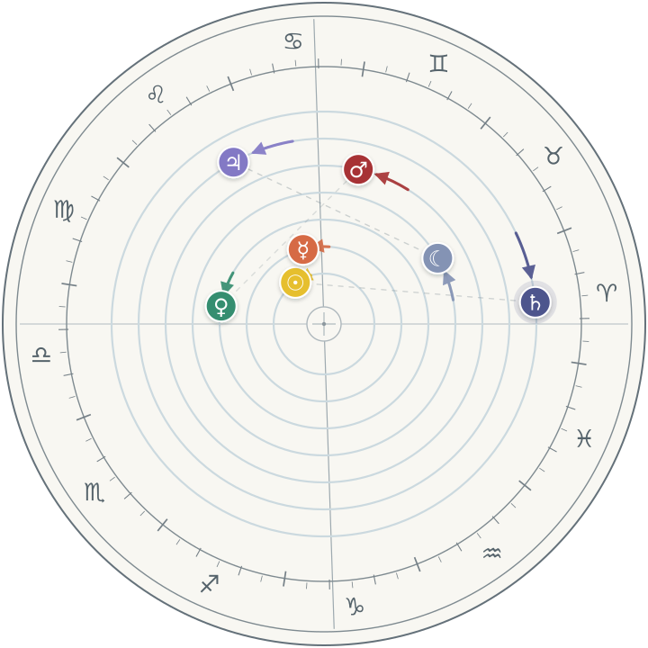
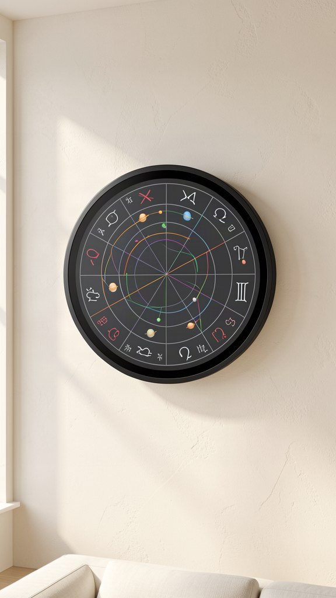
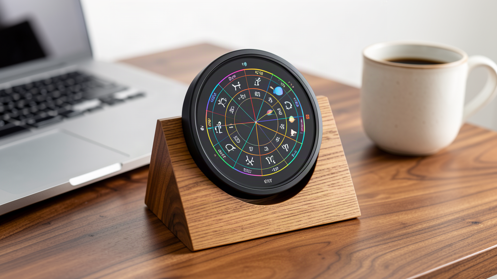
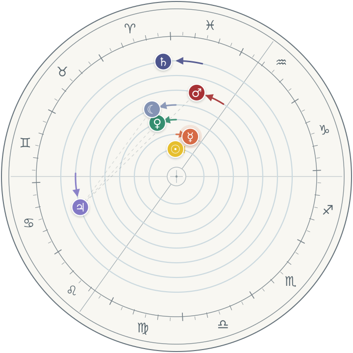
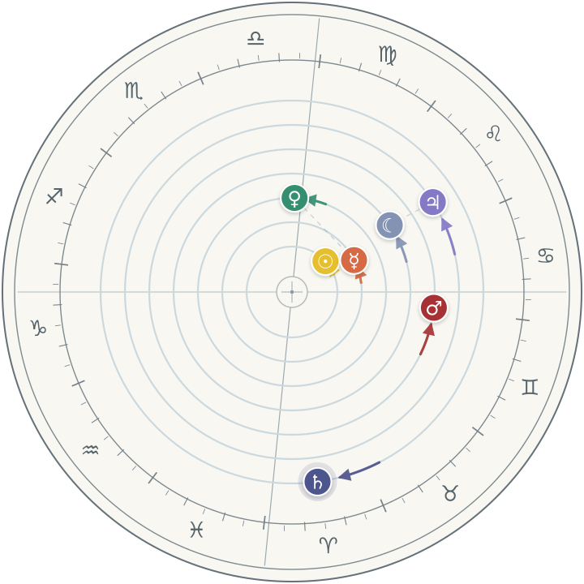

The Meridian / 01 — A precision instrument for the sky above you
The sky,
on your
wall.
A living astrological clock. Real planetary positions — computed with Swiss Ephemeris precision — rendered as a beautiful instrument for your wall or desk.

An instrument, not a gadget
SEC / 01

Everything the sky does, it does
SEC / 02Live for life
Free live updates from our central API — forever, no subscription. New themes, styles, and sky events delivered to your clock.
Open source
The renderer and server are open. Run your own API on your own hardware. Your clock, your rules, your data.
Themes & styles
A growing library of color themes and dial styles — from minimal instrument to full ceremonial wheel.
Personal presets
Save lat/lon, birth times, and meaningful dates. Pull up natal charts and live transits against them, any time.
Dial time by hand
Drag your finger around the bezel to advance or rewind time and watch the planets move. Retrograde made visceral.
Any planet's sky
See the zodiac projected from Mars, the Moon, or anywhere in the solar system — with special themes per world.
Live planetary views
Where live imagery exists — the Moon tonight, and more as feeds allow — rendered right on the dial.
CircleThrice inside
3-month trial membership included. Members tap the screen to push moments straight into their CircleThrice planner.
E-paper option
Prefer paper-calm? A 4″ or 6″ round color e-paper variant sips power and glows never.
Real charts, rendered by the real engine
SEC / 03Home sky
Portland, Oregon · live local horizon, Ascendant at the left, true planetary longitudes.

Any moment
London · vernal equinox 2026. Dial to any date — birth, launch, anniversary — and hold it there.

Any world
Mars, Elysium Planitia · the zodiac as seen from another planet, with its own theme.
Every chart on this page was rendered by Astro Bling — the actual open-source engine that ships inside the Meridian. No mockups, no hand-drawn fakes. What you see is the product.
Time you can turn
SEC / 04Watch a retrograde happen
Rendered by the Meridian's own engine: weeks of planetary motion compressed into seconds. On the device, your finger is the timeline.
- Direction arrows and halos mark retrograde stations
- Aspect lines form and dissolve in real time
- Speed follows your hand — one degree or one decade per turn
Rewards
SEC / 05- The Astro Bling app (all platforms)
- Every theme pack, forever
- Name in the backers' constellation
- 3-month CircleThrice trial
- One Meridian clock (4″ round HDMI)
- Wall mount + desk stand included
- Lifetime free live updates
- 3-month CircleThrice trial
- Launch-edition engraving
- Round color e-paper edition (4″ or 6″)
- Months of battery-sipping stillness
- Lifetime free live updates
- 3-month CircleThrice trial
Open, because instruments should be
SEC / 06The engine is already open
Astro Bling — the renderer at the heart of the Meridian — is open source today. It computes the classical planets, Ascendant, and Midheaven locally with Swiss Ephemeris data, and renders SVG or animation with no network required.
Run your own sky server
Backers get the full API server source. Point your clock at our cloud for zero effort, or at a Raspberry Pi in your closet for total sovereignty. Same protocol, same themes.
No subscription for the sky
Live updates are free for the life of the device. CircleThrice membership adds planner integration — the clock never stops being a clock without it.
# render your sky, right now $ astro-bling --lat 45.51 --lon -122.68 # or a moment that matters $ astro-bling --date 1990-06-14T07:22 \ --lat 51.50 --lon -0.12 # your own server, one command $ meridian-server --port 8443
Questions
SEC / 07Does it need a subscription?
No. Live sky updates, themes, and firmware are free for the life of the device. The optional CircleThrice membership adds planner integration and community features — the clock is fully functional without it.
Is the astrology engine really included?
Yes. Swiss Ephemeris runs on-device; the clock computes positions locally. The network only adds themes, live imagery, and convenience — accuracy never depends on a connection.
What's the difference between HDMI and e-paper editions?
The 4″ round HDMI display is vivid, animated, and touch-driven — dial time with your fingers. The round color e-paper edition trades animation for a calm, paper-like face and extremely low power draw.
Can I really run my own server?
Yes — the API server ships as open source to backers. One command, any small machine. Your clock accepts a custom server URL in settings.
When does it ship?
Targeting 9 months after campaign close: prototypes exist today (every chart on this page is real), and the remaining work is industrial design, boards, and certification.
Own the sky
above you.
Back the Meridian and put a living astronomical instrument on your wall.
Back this project ↗Concept campaign preview · Oregon Dev Foundry · Portland, Oregon